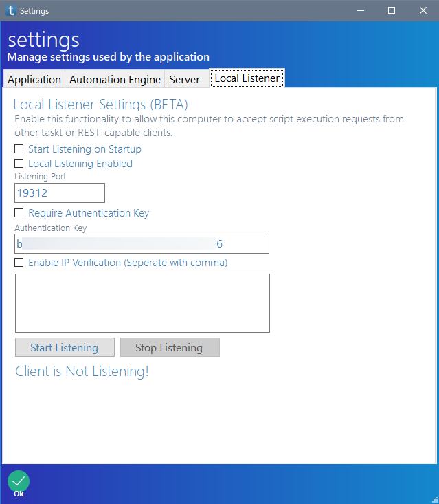

無料で使える RPA の taskt の使い方を紹介しています
Settings Manager では taskt の各種設定ができます。
設定項目がタブで分かれています。
| タブ | 設定内容 |
|---|---|
| Application | taskt の編集画面や、スクリプトの保存先などの設定です |
| Automation Engine | スクリプトを実行するロボットなどの設定です |
| Server | tasktServer の設定です |
| Local Listener | 自分のパソコンの taskt とそのスクリプトを、外部からの動かすための設定です バージョン 3.3.0.0 で追加されました |
Application の設定項目の詳細です。
| 設定項目 | 意味 |
|---|---|
| Anti-Idle (while app is open) | よくわかりません |
| New Commands Insert Below Selected Command | チェックが入っていないときは、新しい命令が一番下に挿入されます チェックが入っているときは、新しい命令が現在選択中の命令の下に挿入されます |
| Allow Drag and Drop into Sequence Command | チェックが入っているときは、ドラッグ&ドロップで命令をシーケンスの中に入れられます |
| Minimize to System Tray | チェックを入れると、taskt を最小化したときにタスクトレーに入れます |
| Use Slim Action Bar | よくわかりません |
| taskt Root Folder | よくわかりません |
| Attended Tasks Folder | taskt のスクリプトファイルを保存するフォルダーの場所です |
| Start Mode | Builder Mode と Attened Mode が選べます Builder Mode はスクリプトの編集ができます Attened Mode は画面がシンプルになり、スクリプトの実行だけができます |
| Check For Updates | taskt のアップデートをチェックします |
| Launch Attened Mode | クリックすると、taskt が Attended Mode になります |
| Generate Documentation | よくわかりません |
| Display Manager for VMs | よくわかりません |
| Script Execution Metrics | 何かの情報です |
| Clear Metrics | クリックすると、Script Execution Metrics が消えます |
スクリプトを実行するロボットの設定などができます。
| 設定項目 | 意味 |
|---|---|
| Show Debug Window | スクリプト実行中にデバッグウィンドウを表示します |
| Automatically Close Debug Window | チェックを入れると、スクリプト終了後、自動的にデバッグウィンドウを閉じます |
| Enable Diagnostic Logging | よくわかりません |
| Show Advanced Debug Logs Duaring Execution | よくわかりません |
| Create Missing Variable During Execution | 存在しない変数に関する設定係らしいです |
| Track Execution Metrics | よくわかりません |
| Override App Instance | よくわかりません |
| Calculate Variables Automatically | チェックを入れると、数式を指定したときに自動的に計算されます バージョン 3.4.0.0 で追加されました |
| Default delay between executing commands | 1 つ命令を実行した後、次の命令を実行するまでの待ち時間です 単位はミリ秒で指定します |
| Start Marker | 各種命令の編集画面で変数名の前に付ける記号です 初期は { です (バージョン 3.3.0.0 以前の初期値は [ です) |
| End Marker | 各種命令の編集画面で変数名の後に付ける記号です 初期は } です (バージョン 3.3.0.0 以前の初期値は ] です) |
| End Script Hotkey | スクリプトの実行を中断するショートカットキーの設定です |
Server では tasktServer の設定をできます。
tasktServer は taskt のスクリプトの実行をサーバー上で管理できるソフトウェアらしいです。
| 設定項目 | 意味 |
|---|---|
| Server Connection Enabled | tasktServer との接続を有効にする？ |
| Check In On Startup | よくわかりません |
| HTTPS Server URL | tasktServer の URL だと思います |
| Test Connection | tasktServer との接続試験をします |
| Client GUID | よくわかりません |
| Publish Task | よくわかりません |
Local Listener では、別の taskt や REST API により、自分のパソコンの taskt を動かすための設定があるようです。
この項目はバージョン 3.3.0.0 から追加されました。

| 設定項目 | 意味 |
|---|---|
| Start Listening on Startup | taskt を起動した段階で通信を有効にする設定だと思います |
| Local Listening Enabled | 外部との通信を有効にする設定だと思います |
| Listening Port | ポート番号です |
| Require Authentication Key | よくわかりません |
| Enable IP Varification | 許可する IP アドレスを制限できるのでしょうか? カンマ区切りで複数の IP アドレスを指定できるようです |
| Start Listening | 通信を開始する |
| Stop Listening | 通信を終了する |